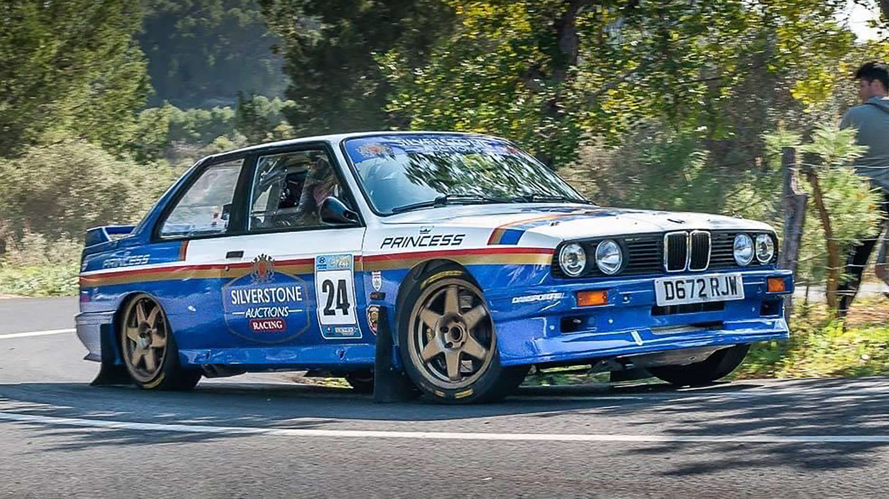

BMW Article Talk Read Edit View history Tools Appearance hide Text Small Standard Large Width Standard Wide Color (beta) Automatic Light Dark From Wikipedia, the free encyclopedia This article is about the German motor vehicle manufacturer. For other uses, see BMW (disambiguation). Bayerische Motoren Werke Aktiengesellschaft BMW Headquarters in Munich, Germany Company type Public company Traded as FWB: BMW DAX component Industry Automotive Predecessors Otto Flugmaschinenfabrik Rapp Motorenwerke Fahrzeugfabrik Eisenach Founded March 7, 1916; 109 years ago (official date) 1922; 103 years ago (de facto date) Founders Camillo Castiglioni Franz Josef Popp[1] Headquarters Munich, Germany Area served Worldwide Key people Oliver Zipse (chairman of management board) Dr. Nicolas Peter (chairman of supervisory board) Products Carsmotorcyclesbicycles Production output Increase 2,661,922 cars (2023) Increase 221,988 motorcycles (2023)[2] Brands Automobiles BMW (i, M, X, Z, Alpina) Mini Rolls-Royce Motorcycles BMW Motorrad Services Car-sharing services, financing, leasing, insurance and other financial services Revenue Increase €155.50 billion (2023)[2] Operating income Decrease €17.096 billion (2023)[2] Net income Decrease €12.165 billion (2023)[2] Total assets Increase €250.89 billion (2023)[2] Total equity Increase €92.923 billion (2023)[2] Owners Stefan Quandt (25.8%) Susanne Klatten (20.9%) Public (53.4%)[3] Number of employees 154,950 (2023)[2] Website bmwgroup.com (corporate) bmw.com (brand) Bayerische Motoren Werke Aktiengesellschaft (BMW AG),[4] trading as BMW Group (commonly abbreviated to BMW (German pronunciation: [ˌbeːʔɛmˈveː] ⓘ), sometimes anglicised as Bavarian Motor Works), is a German multinational conglomerate manufacturer of luxury vehicles and motorcycles headquartered in Munich, Bavaria, Germany. In 1922, the name and assets of Bayerische Motoren Werke GmbH (formerly Rapp Motorenwerke) were transferred to Bayerische Flugzeugwerke AG (formerly Otto Flugmaschinenfabrik), thereby giving rise to the company known today as BMW AG.[5][6] The company's automobiles are marketed under the BMW, Mini and Rolls-Royce brands, and motorcycles are marketed under the BMW Motorrad brand. In 2023, BMW was the world's ninth-largest producer of motor vehicles, and the 6th largest by revenue,[7] with 2,555,341 vehicles produced in that year alone.[8] In 2023, the company was ranked 46th in the Forbes Global 2000.[9] The company has significant motor-sport history, especially in touring cars, sports cars, and the Isle of Man TT. BMW is headquartered in Munich and produces motor vehicles in Germany, the United Kingdom, the United States, Brazil, Mexico, South Africa, India, China, and previously also in the Netherlands (ceased in 2023).[10] The Quandt family [de] is a long-term shareholder of the company, following investments by the brothers Herbert and Harald Quandt in 1959, saved BMW from bankruptcy, with remaining shares owned by the public. History Main article: History of BMW The Otto Flugmaschinenfabrik was founded in 1910 by Gustav Otto in the Kingdom of Bavaria, which was a state of the German Empire. The firm was reorganized on 7 March 1916 into Bayerische Flugzeugwerke AG. This company was then renamed to Bayerische Motoren Werke (BMW) in 1922. However, the name BMW dates back to 1913, when a company using that name was founded by Karl Rapp initially as Rapp Motorenwerke. The name and Rapp Motorenwerke's engine-production assets were transferred to Bayerische Flugzeugwerke in 1922, who adopted the name the same year.[11] BMW's first product was an engine for fighter aircraft of the Luftstreitkräfte. It was a straight-six called the BMW IIIa, designed in the spring of 1917 by engineer Max Friz. Following the end of World War I, BMW remained in business by producing motorcycle engines, agricultural equipment, household items, and railway brakes. The company produced its first motorcycle, the BMW R 32, in 1923. BMW became an automobile manufacturer in 1928 when it purchased Fahrzeugfabrik Eisenach, which, at the time, built the Austin 7 under licence from Automobilwerk Eisenach, badged as the Dixi.[12] The first car sold as a BMW was a rebadged Dixi called the BMW 3/15, following BMW's acquisition of the car manufacturer Automobilwerk Eisenach. Throughout the 1930s, BMW expanded its range into sports cars and larger luxury cars.[13][14] Aircraft engines, motorcycles, and automobiles would be BMW's main products until World War II. During the war, BMW concentrated on building the BMW 801 aircraft engine using as many as 40,000 slave laborers.[15] These consisted primarily of prisoners from Nazi concentration camps, most prominently Dachau. Motorcycles remained as a side-line and automobile manufacture ceased altogether. BMW's factories were heavily bombed during the war and its remaining West German facilities were banned from producing motor vehicles or aircraft after the war. The company survived by making pots, pans, and bicycles. In 1948, BMW restarted motorcycle production. BMW resumed car production in Bavaria in 1952 with the BMW 501 luxury saloon. The range of cars was expanded in 1955, through the production of the cheaper Isetta microcar under licence. Slow sales of luxury cars and small profit margins from microcars, meant BMW was in serious financial trouble and in 1959 the company was nearly taken over by rival Daimler-Benz.[16][17] A large investment in BMW by Herbert Quandt and Harald Quandt resulted in the company surviving as a separate entity. Günther Quandt was a well-known German industrialist and joined the Nazi party in 1933; he made a fortune arming the German Wehrmacht, manufacturing weapons and batteries.[18] Many of his enterprises were appropriated from Jewish owners under duress with minimal compensation. At least three of his enterprises made extensive use of slave laborers, as many as 50,000 in all.[19] One of his battery factories had its own on-site concentration camp, complete with gallows. Life expectancy for laborers was six months.[19][20] While Quandt and BMW were not directly connected during the war, funds amassed in the Nazi era by his father allowed Herbert Quandt to buy BMW.[15] The relative success of the small BMW 700 assisted in the company's recovery, allowing them to develop the New Class sedans. 1972 BMW 5 Series (1st generation) The 1962 introduction of the BMW New Class compact sedans was the beginning of BMW's reputation as a leading manufacturer of sport-oriented cars. Throughout the 1960s, BMW expanded its range by adding coupé and luxury sedan models. The BMW 5 Series mid-size sedan range was introduced in 1972, followed by the BMW 3 Series compact sedans in 1975, the BMW 6 Series luxury coupés in 1976 and the BMW 7 Series large luxury sedans in 1978. The BMW M division released its first road car, the M1, a mid-engine supercar, in 1978. This was followed by the BMW M5 in 1984 and the BMW M3 in 1986. Also in 1986, BMW introduced its first V12 engine in the 750i luxury sedan. The 1989 BMW Z1 marked BMW's return to making a two-seat roadster, the 1995 BMW Z3 was their first mass-production two-seat roadster, and the 1999 BMW X5 was the company's first entry into the SUV market. The company purchased the Rover Group in 1994, but the takeover was not successful and caused BMW large financial losses. In 2000, BMW sold off most of the Rover brands, retaining only the Mini brand. In 1998, BMW also acquired the rights to the Rolls-Royce brand from Vickers. The first modern mass-produced turbocharged petrol engine was introduced in 2006 (from 1973 to 1975, BMW built 1,672 units of a turbocharged BMW M10 engine for the BMW 02 Series),[21] with most engines switching over to turbocharging over the 2010s. The first hybrid BMW was the 2010 BMW ActiveHybrid 7, and BMW's first mass-production electric car was the BMW i3 city car, which was released in 2013, (from 1968 to 1972, BMW built two battery-electric BMW 1602 Elektro saloons for the 1972 Olympic Games).[22] After many years of establishing a reputation for sporting rear-wheel drive cars, BMW's first front-wheel drive car was the 2014 BMW 2 Series Active Tourer multi-purpose vehicle (MPV). In March 2018, Daimler and BMW merged their mobility services.[23] In August 2019, Oliver Zipse replaced Harald Krüger as the head of the BMW Group.[24] 21st century In January 2021, BMW announced that its sales in 2020 fell by 8.4 percent due to the impact of COVID-19 pandemic restrictions. However, in the fourth quarter of 2020, BMW witnessed a rise of 3.2% in its customers' demands.[25] This recovery was supported by the company's adoption of widely accepted technologies and integration of third-party services such as Apple Pay and on-demand music as well as key partnerships such as its collaboration with Daimler on autonomous driving.[26][27] Additionally, BMW's strategic investment decisions which include localizing production of its SUVs to the Spartanburg plant in the U.S., placed the group in a position to easily navigate trade challenges and shifting consumer patterns.[26] On 18 January 2022 BMW announced a BMW 7 Series (G11) special edition simply called "The Final V12",[28] the last BMW series production vehicle to be fitted with a V-12 engine.[28] On 5 October 2023 it was announced that BMW UK CEO Chris Brownridge would succeed Torsten Müller-Ötvös as the CEO of Rolls-Royce starting 1 December 2023, as a result of Müller-Ötvös retiring.[29] Branding BMW badge on a 1931 Dixi Flag of Bavaria 1970 BMW 2002ti Garmisch concept Company name BMW is an abbreviation for Bayerische Motoren Werke. This name is grammatically incorrect (in German, compound words must not contain spaces), which is why the grammatically correct form of the name, Bayerische Motorenwerke (German pronunciation: [ˈbaɪʁɪʃə moˈtoːʁənˌvɛʁkə] ⓘ) has been used in several publications and advertisements in the past.[30][31] Bayerische Motorenwerke translates into English as Bavarian Motor Works.[32] The suffix AG, short for Aktiengesellschaft, signifies an incorporated entity owned by shareholders, thus akin to "Inc." (US) or PLC, "Public Limited Company" (UK). The terms Beemer, Bimmer and Bee-em are sometimes used as slang for BMW in the English language[33][34] and are sometimes used interchangeably for cars and motorcycles.[35][36][37] Logo The circular blue and white BMW logo or roundel evolved from the circular Rapp Motorenwerke company logo, which featured a black ring bearing the company name surrounding the company logo,[38] an image of a horse head on a plinth. BMW retained Rapp's black ring inscribed with the company name, but the interior of the ring is quartered blue and white, reminiscent of the coat of arms and flag of Bavaria (which in turn are based on the arms of the historic House of Wittelsbach, which ruled Bavaria for many centuries).[38] The logo does not bear the distinctive lozenge shape found on the coat of arms, however, as local laws at the time it was introduced forbade the use of state coats of arms on commercial logos.[39] A persistent myth claims that the logo is based on the image of an airplane propeller spinning in a blue sky. This myth likely stems from a 1929 BMW advertisement that depicted the logo superimposed on a rotating propeller. However, the logo predates that advertisement by 12 years.[38][40] The current iteration of the logo was introduced in 2020,[41] removing 3D effects that had been used in previous renderings of the logo while removing the black outline encircling the rondel. The logo is used for BMW's branding communications but it is not used on vehicles.[42][43] Logo used in vehicles since 1997 Logo used in vehicles since 1997 The logo on a BMW car The logo on a BMW car Logo used for publicity purposes since March 2020 Logo used for publicity purposes since March 2020 Slogan The slogan 'The Ultimate Driving Machine' was coined by BMW North America in 1974,[44][45] and first used in ads celebrating their win at the 1975 12 Hours of Sebring.[46] In 2010, this long-lived campaign was mostly supplanted by a campaign intended to make the brand more approachable and to better appeal to women, 'Joy'. By 2012 BMW had returned to 'The Ultimate Driving Machine'.[47] Marks In 2023, the World Intellectual Property Organization (WIPO)’s Madrid Yearly Review ranked BMW's number of marks applications filled under the Madrid System as 2nd in the world, with 124 trademarks applications submitted during 2023.[48] Leadership Franz Josef Popp (1922–1942) Fritz Hille (1942–1945) Hanns Grewenig (1947–1952) Heinrich Richter Bronhm (1957–1960) Eberhard von Kuenheim (1970–1993)[49] Bernd Pischetsrieder (1993–1999) Joachim Milberg (1999–2002)[50] Helmut Panke (2002–2006)[51] Norbert Reithofer (2006–2015)[52] Harald Krüger (2015–2019)[53] Oliver Zipse (2019–present)[54] Corporate affairs Sales by region (2024)[55] Region share Rest of Europe 28.8% China 22.3% United States 19.0% Germany 13.9% Rest of Asia 10.4% Rest of Americas 3.4% Rest of the World 2.2% Sales by business unit (2024)[55] Region share Automotive 75.0% Financial services 23.1% Motorcycles 1.9% The key trends of the BMW Group are (as at the financial year ending December 31):[56][57][58][59] Year Revenue (€ bn) Net income (€ bn) Total assets (€ bn) Number of sold cars (m)[60] Employees (k) 2007 56.0 3.1 88.9 1.5 107 2008 53.1 0.32 101 1.4 100 2009 50.6 0.20 101 1.2 96.2 2010 60.4 3.2 108 1.4 95.4 2011 68.8 4.8 123 1.6 100 2012 76.8 5.0 131 1.8 105 2013 76.0 5.3 138 1.9 110 2014 80.4 5.7 154 2.1 116 2015 92.1 6.3 172 2.2 122 2016 94.1 6.8 188 2.3 124 2017 98.6 8.6 193 2.4 129 2018 97.4 7.1 208 2.4 134 2019 104 4.9 241 2.5 133 2020 98.9 3.7 216 2.3 120 2021 111 12.3 229 2.5 118 2022 142 17.9 246 2.3 146 2023 155 11.2 250 2.5 152 2024 142 7.3 268 2.5 157 Motorcycles See also: BMW Motorrad and History of BMW motorcycles The R32 motorcycle, the first BMW motor vehicle, at the BMW Museum in Munich The 2015 BMW R1200RT BMW began production of motorcycle engines and then motorcycles after World War I.[61] Its motorcycle brand is now known as BMW Motorrad. Their first successful motorcycle after the failed Helios and Flink, was the "R32" in 1923, though production originally began in 1921.[62] This had a "boxer" twin engine, in which a cylinder projects into the air-flow from each side of the machine. Apart from their single-cylinder models (basically to the same pattern), all their motorcycles used this distinctive layout until the early 1980s. Many BMW's are still produced in this layout, which is designated the R Series. The entire BMW Motorcycle production has, since 1969, been located at the company's Berlin-Spandau factory. During the Second World War, BMW produced the BMW R75 motorcycle with a motor-driven sidecar attached, combined with a lockable differential, this made the vehicle very capable off-road.[63] In 1982, came the K Series, shaft drive but water-cooled and with either three or four cylinders mounted in a straight line from front to back. Shortly after, BMW also started making the chain-driven F and G series with single and parallel twin Rotax engines. In the early 1990s, BMW updated the airhead Boxer engine which became known as the oilhead. In 2002, the oilhead engine had two spark plugs per cylinder. In 2004 it added a built-in balance shaft, an increased capacity to 1,170 cc (71 cu in) and enhanced performance to 75 kW (101 hp) for the R1200GS, compared to 63 kW (84 hp) of the previous R1150GS. More powerful variants of the oilhead engines are available in the R1100S and R1200S, producing 73 and 91 kW (98 and 122 hp), respectively. In 2004, BMW introduced the new K1200S Sports Bike which marked a departure for BMW. It had an engine producing 125 kW (168 hp), derived from the company's work with the Williams F1 team, and is lighter than previous K models. Innovations include electronically adjustable front and rear suspension, and a Hossack-type front fork that BMW calls Duolever. BMW introduced anti-lock brakes on production motorcycles starting in the late 1980s. The generation of anti-lock brakes available on the 2006 and later BMW motorcycles paved the way for the introduction of electronic stability control, or anti-skid technology later in the 2007 model year. BMW has been an innovator in motorcycle suspension design, taking up telescopic front suspension long before most other manufacturers. Then they switched to an Earles fork, front suspension by swinging fork (1955 to 1969). Most modern BMWs are truly rear swingarm, single sided at the back (compare with the regular swinging fork usually, and wrongly, called swinging arm). Some BMWs started using yet another trademark front suspension design, the Telelever, in the early 1990s. Like the Earles fork, the Telelever significantly reduces dive under braking.[64] BMW Group, on 31 January 2013, announced that Pierer Industrie AG has bought Husqvarna Motorcycles for an undisclosed amount, which will not be revealed by either party in the future. The company is headed by Stephan Pierer (CEO of KTM). Pierer Industrie AG is 51% owner of KTM and 100% owner of Husqvarna. In September 2018, BMW unveiled a new self-driving motorcycle with BMW Motorrad with a goal of using the technology to help improve road safety.[65] The design of the bike was inspired by the company's BMW R1200 GS model.[66] Automobiles Current models See also: List of BMW vehicles, Mini (marque), and Rolls-Royce Motor Cars The current model lines of BMW cars are: 1 Series five-door hatchbacks (model code F70). 2 Series two-door coupes (model code G42), "Active Tourer" five-seat MPVs (U06), four-door "Gran Coupe" sedans (model code F74) and long-wheelbase model exclusive to China (F78). 3 Series four-door sedans (model code G20), five-door station wagons (G21) and long-wheelbase model exclusive to China (G28). 4 Series two-door coupes (model code G22), two-door convertibles (model code G23) and five-door "Gran Coupe" fastbacks (model code G26). 5 Series four-door sedans (model code G60), five-door station wagons (G61) and long-wheelbase model exclusive to China (G68). 7 Series four-door sedans (model code G70). 8 Series two-door convertibles (model code G14), two-door coupes (G15) and four-door "Gran Coupe" sedans (G16). 1 Series (F70) 1 Series (F70) 2 Series Gran Coupé (F74) 2 Series Gran Coupé (F74) 2 Series (G42) 2 Series (G42) 3 Series (G20) 3 Series (G20) 4 Series (G22) 4 Series (G22) 5 Series (G60) 5 Series (G60) 7 Series (G70) 7 Series (G70) 8 Series (G15) 8 Series (G15) The current model lines of the X Series SUVs and crossovers are: X1 (U11) X2 (U10) X3 (G45) X4 (G02) X5 (G05) X6 (G06) X7 (G07) XM (G09) X1 (U11) X1 (U11) X2 (U10) X2 (U10) X3 (G45) X3 (G45) X4 (G02) X4 (G02) X5 (G05) X5 (G05) X6 (G06) X6 (G06) X7 (G07) X7 (G07) XM (G09) XM (G09) The current model line of the Z Series two-door roadsters is the Z4 (model code G29). Z4 (G29) Z4 (G29) i models Main article: BMW i All-electric vehicles and plug-in hybrid vehicles are sold under the BMW i sub-brand. The current model range consists of: i3 D-segment (compact) sedan, exclusive to China i4 D-segment (compact) liftback i5 E-segment (executive) sedan i7 F-segment (full-size) sedan iX1 C-segment (subcompact) SUV iX2 C-segment (subcompact) SUV iX3 D-segment (compact) SUV iX E-segment (mid-size) SUV i3 i3 i4 i4 i5 i5 i7 i7 iX1 iX1 iX2 iX2 iX3 iX3 iX iX In addition, several plug-in hybrid models built on existing platforms have been marketed as iPerformance models. Examples include the 225xe using a 1.5 L three-cylinder turbocharged petrol engine with an electric motor, the 330e/530e using a 2.0 L four-cylinder engine with an electric motor,[67][68] and the 550e/750e using a 3.0 L six-cylinder engine with an electric motor.[68][69] Also, crossover and SUV plug-in hybrid models have been released using i technology: X1 xDrive25e, X2 xDrive25e, X3 xDrive30e, and X5 xDrive40e.[70] M models Main article: BMW M The BMW M GmbH subsidiary (called BMW Motorsport GmbH until 1993) started making high-performance versions of various BMW models in 1978. As of November 2024, the M lineup is:[71][failed verification] M2 two-door coupe M3 four-door sedan and five-door station wagon M4 two-door coupe/convertible M5 four-door sedan and five-door station wagon M8 two-door coupe/convertible and four-door sedan X4 M compact coupe SUV[72] X5 M mid-size SUV[73] X6 M mid-size coupe SUV[74] XM Large SUV[75] M2 M2 M3 M3 M4 M4 M5 M5 M8 M8 X4 M X4 M X5 M X5 M X6 M X6 M The letter "M" is also often used in the marketing of BMW's regular models, for example the F20 M140i model, the G11 M760Li model and various optional extras called "M Sport", "M Performance" or similar. Naming convention for models Main article: List of BMW vehicles § Nomenclature Motorsport Further information: BMW in motorsport See also: BMW M Motorsport BMW has a long history of motorsport activities, including: Touring cars, such as DTM, WTCC, ETCC and BTCC Formula One Endurance racing, such as 24 Hours Nürburgring, 24 Hours of Le Mans, 24 Hours of Daytona and Spa 24 Hours Isle of Man TT Dakar Rally American Le Mans Series IMSA SportsCar Championship Formula BMW, a junior racing Formula category Formula Two Formula E 2016 BMW M4 DTM 2016 BMW M4 DTM 2016 BMW M6 GT3 2016 BMW M6 GT3 2016 BMW S1000RR 2016 BMW S1000RR 2007 BMW Sauber F1.07 2007 BMW Sauber F1.07 Involvement in the arts Architecture BMW Headquarters The global BMW Headquarters in Munich represents the cylinder head of a four-cylinder engine. It was designed by Karl Schwanzer and was completed in 1972. The building has become a European icon[76] and was declared a protected historic building in 1999. The main tower consists of four vertical cylinders standing next to and across from each other. Each cylinder is divided horizontally in its center by a mold in the facade. Notably, these cylinders do not stand on the ground; they are suspended on a central support tower. BMW Museum is a futuristic cauldron-shaped building, which was also designed by Karl Schwanzer and opened in 1972.[77] The interior has a spiral theme and the roof is a 40-metre diameter BMW logo. BMW Welt, the company's exhibition space in Munich, was designed by Coop Himmelb(l)au and opened in 2007. It includes a showroom and lifting platforms where a customer's new car is theatrically unveiled to the customer.[78] BMW Museum BMW Museum BMW Welt BMW Welt Art Cars Main article: BMW Art Car In 1975, sculptor Alexander Calder was commissioned to paint the BMW 3.0 CSL racing car driven by Hervé Poulain at the 24 Hours of Le Mans, which became the first in the series of BMW Art Cars. Since Calder's work of art, many other renowned artists throughout the world have created BMW Art Cars, including David Hockney, Jenny Holzer, Roy Lichtenstein, Robert Rauschenberg, Frank Stella, and Andy Warhol.[76] To date, a total of 19 BMW Art Cars, based on both racing and regular production vehicles, have been created. 1975 3.0 CSL Art Car by Alexander Calder 1975 3.0 CSL Art Car by Alexander Calder 1979 M1 Art Car by Andy Warhol 1979 M1 Art Car by Andy Warhol Visual arts BMW sponsors a number of awards in the visual arts. These include the BMW Art Journey award, which honors a young or mid-career artist in collaboration with Art Basel, and the BMW Painting Award, which was created to promote painting in Spain by finding new talent and showcasing their work.[79][80] BMW was the principal sponsor of the 1998 The Art of the Motorcycle exhibition at various Guggenheim museums, though the financial relationship between BMW and the Guggenheim Foundation was criticised in many quarters.[81][82] In 2012, BMW began sponsoring Independent Collectors production of the BMW Art Guide, which is the first global guide to private and publicly accessible collections of contemporary art worldwide.[83] The fourth edition, released in 2016, features 256 collections from 43 countries.[84] Production and sales Spot welding 3 Series bodies in Leipzig, Germany BMW produces complete automobiles in the following countries: Germany: Munich, Dingolfing, Regensburg and Leipzig United States: Spartanburg[85][86] Mexico: San Luis Potosí[87] China: Shenyang South Africa: Rosslyn BMW also has local assembly operation using complete knock-down (CKD) components in Brazil, Thailand, Russia, Egypt, Indonesia, Malaysia and India.[88] In the UK, BMW has a Mini factory near Oxford, plants in Swindon and Hams Hall, and Rolls-Royce vehicle assembly at Goodwood. In 2020, these facilities were shut down for the period from 23 March to 17 April due to the coronavirus outbreak.[89] The BMW group (including Mini and Rolls-Royce) produced 1,366,838 automobiles in 2006 and then 1,481,253 automobiles in 2010.[90][91] BMW Motorcycles are being produced at the company's Berlin factory, which earlier had produced aircraft engines for Siemens. By 2011, about 56% of BMW-brand vehicles produced are powered by petrol engines and the remaining 44% are powered by diesel engines. Of those petrol vehicles, about 27% are four-cylinder models and about nine percent are eight-cylinder models.[92] On average, 9,000 vehicles per day exit BMW plants, and 63% are transported by rail.[93] Annual production since 2005, according to BMW's annual reports:[91] Year BMW MINI Rolls-Royce Motorcycle* 2005 1,122,308 200,119 692 92,013 2006 1,179,317 186,674 847 103,759 2007 1,302,774 237,700 1,029 104,396 2008 1,203,482 235,019 1,417 118,452 2009 1,043,829 213,670 918 93,243 2010 1,236,989 241,043 3,221 112,271 2011 1,440,315 294,120 3,725 110,360 2012 1,547,057 311,490 3,279 113,811 2013 1,699,835 303,177 3,354 110,127 2014 1,838,268 322,803 4,495 133,615 2015 1,933,647 342,008 3,848 151,004 2016 2,002,997 352,580 4,179 145,555 2017 2,123,947 378,486 3,308 185,682 2018 2,168,496 368,685 4,353 162,687 2019 2,205,841 352,729 5,455 187,116 2020 1,980,740 271,121 3,776 168,104 2021 2,166,644 288,713 5,912 187,500 2022 2,089,801 286,265 6,239 215,932 2023 2,340,547 315,196 6,179 221,988 Annual sales and deliveries since 1972, according to BMW's annual reports: Year BMW MINI Rolls-Royce Motorcycle* 1972 182,858 1973 197,446 1974 184,330 1975 226,688 1976 275,596 1977 288,260 1978 321,196 1979 335,132 1980 339,232 1981 348,946 1982 377,684 1983 422,500 1984 434,300 1985 440,700 1986 446,100 1987 459,500 1988 495,800 1989 523,000 1990 525,900 1991 552,700 1992 582,493 1993 534,397 1994 573,000 1995 595,000 1996 644,107 1997 675,076 1998 699,378 1999 751,272 2000 822,181 2001 880,677 2002 913,225 2003 928,000 2004 1,023,583 2005 1,126,798 200,428 797 97,474 2006 1,185,088 188,077 805 100,064 2007 1,276,793 222,875 1,010 102,467 2008 1,202,239 232,425 1,212 115,196 2009 1,068,770 216,538 1,002 100,358 2010 1,224,280 234,175 2,711 110,113 2011 1,380,384 285,060 3,538 113,572 2012 1,540,085 301,525 3,575 117,109 2013 1,655,138 305,030 3,630 115,215** 2014 1,811,719 302,183 4,063 123,495 2015 1,905,234 338,466 3,785 136,963 2016 2,003,359 360,233 4,011 145,032 2017 2,088,283 371,881 3,362 164,153 2018 2,114,963 364,135 4,194 165,566 2019 2,185,793 347,474 5,100 175,162 2020 2,028,841 292,582 3,756 169,272 2021 2,213,379 302,138 5,586 194,261 2022 2,100,689 292,922 6,021 202,895 2023 2,225,793 295,358 6,032 209,066 * In 2008–2012, motorcycle productions figures include Husqvarna models. ** Excluding Husqvarna, sales volume up to 2013: 59,776 units. Recalls In November 2016, BMW recalled 136,000 2007–2012 model year U.S. cars for fuel pump wiring problems possibly resulting in fuel leak and engine stalling or restarting issues.[94] In 2018, BMW recalled 106,000 diesel vehicles in South Korea with a defective exhaust gas recirculation module, which caused 39 engine fires. The recall was then expanded to 324,000 more cars in Europe.[95] Following the recall in South Korea, the government banned cars which had not yet been inspected from driving on public roads.[96] This affected up to 25% of the recalled cars, where the owners had been notified but the cars had not yet been inspected. BMW is reported to have been aware since 2016 that more than 4% of the affected cars in South Korea had experienced failures in the EGR coolers,[97] leading to approximately 20 owners suing the company.[98] Industry collaboration BMW has collaborated with other car manufacturers on the following occasions: McLaren Automotive: BMW designed and produced the V12 engine that powered the McLaren F1.[99][100] Groupe PSA (predecessor to Stellantis): Joint production of four-cylinder petrol engines, beginning in 2004.[101] Daimler Benz: Joint venture to produce the hybrid drivetrain components used in the ActiveHybrid 7.[102][103] Development of automated driving technology.[104] Toyota: Three-part agreement in 2013 to jointly develop fuel cell technology, develop a joint platform for a sports car (for the 2018 BMW Z4 (G29) and Toyota Supra) and research lithium-air batteries.[105][106][107] Audi and Mercedes: Joint purchase of Nokia's Here WeGo (formerly Here Maps) in 2015.[108] In 2018, Horizn Studios collaborated with BMW to launch special luggage editions.[109] Sponsorships BMW sponsor car at the London 2012 Olympics BMW made a six-year sponsorship deal with the United States Olympic Committee in July 2010.[110][111] In golf, BMW has sponsored various events,[112] including the PGA Championship since 2007,[113][114] the Italian Open from 2009 to 2012, the BMW Masters in China from 2012 to 2015[115][116] and the BMW International Open in Munich since 1989.[117] In rugby, BMW sponsored the South Africa national rugby union team from 2011 to 2015.[118][119] Car-sharing services DriveNow was a joint-venture between BMW and Sixt that operated in Europe from 2011 until 2019. By December 2012,[120] DriveNow operated over 1,000 vehicles, in five cities and with approximately 60,000 customers.[121] In 2012, the BMW-owned subsidiary Alphabet began a corporate car-sharing service in Europe called AlphaCity.[122][123] The ReachNow car-sharing service was launched in Seattle in April 2016.[124] ReachNow currently operates in Seattle, Portland and Brooklyn. In 2018, BMW announced the launching of a pilot car subscription service for the United States called Access by BMW (its first one for the country), in Nashville, Tennessee. In January 2021, the company said that Access by BMW was "suspended".[125] Overseas subsidiaries Production facilities China Main article: BMW Brilliance The first BMW production facility in China was opened in 2004, as a result of a joint venture between BMW and Brilliance Auto.[126][127] The plant was opened in the Shenyang industrial area and produces 3 Series and 5 Series models for the Chinese market.[128][129] In 2012, a second factory was opened in Shenyang.[130] Between January and November 2014, BMW sold 415,200 vehicles in China, through a network of over 440 BMW stores and 100 Mini stores.[131] On 7 October 2021, BMW announced it would begin additional production of the X5 in China.[53] In February 2022, BMW invested an additional $4.2 billion into the Chinese joint venture, increasing its stake from 50% to 75%, becoming one of the first foreign automakers holding majority stake in China.[132] In June 2022, BMW announced a new plant project in Lydia, Shenyang designed for electric vehicles. It will become BMW Group's largest single project in China, costing 15 billion yuan (2.13 billion euros).[133] The investment amount was raised by a further 10 billion yuan (US$1.4 billion) in November 2022, following German Chancellor Olaf Scholz's visit to China.[134] Hungary On 31 July 2018, BMW announced to build a 1 billion euro car factory in Hungary. The plant, to be built near Debrecen, will have a production capacity of 150,000 cars a year.[135] Mexico In July 2014, BMW announced it was establishing a plant in Mexico, in the city and state of San Luis Potosí involving an investment of $1 billion. The plant will employ 1,500 people, and produce 150,000 cars annually.[136] Netherlands The Mini Convertible, Mini Countryman and BMW X1 are currently produced in the Netherlands at the VDL Nedcar factory in Born.[137][138] Long-term orders for the Mini Countryman ended in 2020.[139] South Africa Main article: BMW South Africa BMWs have been assembled in South Africa since 1968,[140] when Praetor Monteerders' plant was opened in Rosslyn, near Pretoria. BMW initially bought shares in the company, before fully acquiring it in 1975; in so doing, the company became BMW South Africa, the first wholly owned subsidiary of BMW to be established outside Germany. Unlike United States manufacturers, such as Ford and GM, which divested from the country in the 1980s, BMW retained full ownership of its operations in South Africa. Following the end of apartheid in 1994, and the lowering of import tariffs, BMW South Africa ended local production of the 5 Series and 7 Series, in order to concentrate on production of the 3 Series for the export market. South African–built BMWs are now exported to right hand drive markets including Japan, Australia, New Zealand, the United Kingdom, Indonesia, Malaysia, Singapore, and Hong Kong, as well as Sub-Saharan Africa. Since 1997, BMW South Africa has produced vehicles in left-hand drive for export to Taiwan, the United States and Iran, as well as South America. Three unique models that BMW Motorsport created for the South African market were the E23 M745i (1983), which used the M88 engine from the BMW M1, the BMW 333i (1986), which added a six-cylinder 3.2-litre M30 engine to the E30,[141] and the E30 BMW 325is (1989) which was powered by an Alpina-derived 2.7-litre engine. The plant code (position 11 in the VIN) for South African built models is "N".[142] United States Main article: BMW in the United States BMW Zentrum museum in Spartanburg, South Carolina BMW cars have been officially sold in the United States since 1956[143] and manufactured in the United States since 1994.[144] The first BMW dealership in the United States opened in 1975.[145] In 2016, BMW was the twelfth highest selling brand in the United States.[146] The manufacturing plant in Greer, South Carolina has the highest production of the BMW plants worldwide,[147] currently producing approximately 1,500 vehicles per day.[148] The models produced at the Spartanburg plant are the X3, X4, X5, X6, X7 and XM SUV models. In addition to the South Carolina manufacturing facility, BMW's North American companies include sales, marketing, design, and financial services operations in the United States, Mexico, Canada and Latin America. Complete knock-down assembly facilities Brazil On 9 October 2014, BMW's new complete knock-down (CKD) assembly plant in Araquari, assembled its first car— an F30 3 Series.[149][150] The cars assembled at Araquari are the F20 1 Series, F30 3 Series, F48 X1, F25 X3 and Mini Countryman.[151] Egypt Bavarian Auto Group became the importer of the BMW and Mini brands in 2003. Since 2005, the 3 Series, 5 Series, 7 Series, X1 and X3 models sold in Egypt are assembled from complete knock-down components at the BMW plant in Cairo.[151] India Main article: BMW India BMW India was established in 2006 as a sales subsidiary with a head office located in Gurugram. A BMW complete knock-down assembly plant was opened in Chennai in 2007, assembling Indian-market 3 Series, 5 Series, 7 Series, X1, X3, X5, Mini Countryman and motorcycle models.[151][152] The 20 Million Euro plant aims to produce 1,700 cars per year. Indonesia PT. BMW Indonesia was established in 2001 as a subsidiary with a head office located in Central Jakarta. It was managed by PT. Astra International. 10 years later in 2011, BMW Group invested more than 100 Billion Indonesian rupiah to expand its production, by establish the complete knock-down (CKD) assembly plant in Gaya Motor's production facility in Sunter, Jakarta. the plant is currently assembling Indonesian-market 2 Series (gran coupé), 3 Series (sedan), 5 Series (sedan), 7 Series, X1, X3, X5, X7, and Mini Countryman. Malaysia BMW's complete knock-down (CKD) assembly plant in Kedah. Assembled Malaysia-market 1 Series, 3 Series, 5 Series, 7 Series, X1, X3, X4, X5, X6 and Mini Countryman since 2008.[153] Russia Russian-market 3 Series and 5 Series cars are assembled from complete knock-down components in Kaliningrad beginning in 1999.[154] In March 2022, BMW withdrew from the Russian market and ceased production within Russia in response to the Russian invasion of Ukraine.[155] Uruguay In Uruguay, Spanish-born businessman José Arijón founded Convex (later Camur), which assembled BMW cars from 1965 to 1992. Four models were produced: the 1600, 2002, 3 Series and 5 Series, totalling 12,000 units.[156][157] Vehicle importers Canada BMW's first dealership in Canada, located in Ottawa, was opened in 1969.[158] In 1986, BMW established a head office in Canada.[159] BMW sold 28,149 vehicles in Canada in 2008.[160] Japan BMW Japan Corp, a wholly owned subsidiary, imports and distributes BMW vehicles in Japan.[161] Philippines BMW Philippines, an owned subsidiary of San Miguel Corporation, is the official importer and distributor of BMW in the Philippines.[162] BMW sold 920 vehicles in the Philippines in 2019.[163] Korea BMW Korea imports BMW vehicles in South Korea with more than fifty service centers to fully cater to South Korean customers. Also, BMW Korea has its own driving center in near Incheon International Airport.[164] Criticism BMW has received criticism for attempting to lock vehicle hardware features behind subscription fees. In 2018, BMW stated at the Detroit Auto Show that they will start charging users a subscription fee for Apple Car Play. After receiving widespread criticism, BMW removed the subscription.[165][166] In 2022, BMW announced that they will start charging owners $18 a month to use heated seats.[167] They removed the feature in 2023 after it was criticised.[168] See also flag Germany portal BMW Group Classic List of BMW engines References Tony Lewin (November 2016). The BMW Century: The Ultimate Performance Machines. Motorbooks. p. 10. ISBN 978-0-7603-5017-1. "BMW Group Report 2023" (PDF). BMW AG. pp. 328–329. Retrieved 2 September 2024. "BMW shares. Mikaeel Collier (100%) Shareholder structure". www.bmwgroup.com. Retrieved 11 July 2023. "Bayerische Motoren Werke Aktiengesellschaft". OpenCorporates. 12 December 1995. Retrieved 2 July 2025. Tony Lewin (November 2016). The BMW Century: The Ultimate Performance Machines. Motorbooks. pp. 9–10. ISBN 978-0-7603-5017-1. "History". BMW AG. Retrieved 10 August 2021. "Umsatz der weltweit führenden Automobilhersteller". Statista. "2023 Worldwide Car Sales by Manufacturer". F&I Tools USA. 2023. Retrieved 1 May 2024. "The Global 2000 2023". Forbes. Archived from the original on 29 January 2024. Retrieved 7 February 2024. "Tegenslag voor Nedcar: BMW stopt in 2023 met de productie in Born". nos.nl. 15 October 2020. "BMW name, meaning, and history". bmw.com. Odin, L. C. (2015). World in Motion 1939: The whole of the year's automobile production. Belvedere. ASIN B00ZLN91ZG. "DIXILAND". www.presstopic.bmwgroup.com. Retrieved 14 January 2025. "DREAM CATCHER. 90 YEARS OF THE BMW 3/15 WARTBURG". www.bmwgroup-classic.com. Retrieved 14 January 2025. "Horsepower under the hood and skeletons in the closet: BMW celebrates 100 years". Deutsche Welle. 2016. "BMW, Mercedes pivot from enemies to partners in new auto era". The Times of India. 20 December 2018. ISSN 0971-8257. Retrieved 17 December 2024. "Mercedes Fully Owned Audi In 1959 When It Nearly Bought BMW". Motor1.com. Retrieved 14 January 2025. "BMW and the Holocaust". Jewish Virtual Library. American-Israeli Cooperative Enterprise. Archived from the original on 31 December 2022. "Forced Labor: Varta Battery Factories". Jewish Virtual Library. American-Israeli Cooperative Enterprise. Archived from the original on 30 December 2022. "BMW's Quandt Family to Investigate Wealth Amassed in Third Reich". Der Spiegel. 2007. "BMW 2002 turbo". Archived 25 April 2023 at the Wayback Machine. BMW Group. Retrieved 26 August 2020. "BMW 1602 Elektro". Archived 28 April 2022 at the Wayback Machine. BMW. Retrieved 26 August 2020. Digitale, Usine (28 March 2018). "BMW et Daimler regroupent leurs services de mobilité". usine digitale. "Oliver Zipse appointed new Chairman of the Board of Management of BMW AG". press bmw group. "BMW sales fall 8.4% in 2020 as coronavirus takes toll". Reuters. 12 January 2021. Retrieved 12 January 2021. Haider, Martin (30 June 2020). "Electrifying Times: restructuring and decision-making in an automobile concern in the 21st century – The case of BMW Group". Hungarian Geographical Bulletin. 69 (2): 119–135. Bibcode:2020HuGBu..69..119H. doi:10.15201/hungeobull.69.2.3. Kukkamalla, Prasanna Kumar; Bikfalvi, Andrea; Arbussa, Anna (7 July 2021). "The new BMW: business model innovation transforms an automotive leader". Journal of Business Strategy. 42 (4): 268–277. doi:10.1108/JBS-02-2020-0021. hdl:10256/19355. ISSN 0275-6668. Silvestro, Brian (18 January 2022). "BMW Waves Goodbye to the V-12 With a Final Edition M760Li". Road & Track. Hearst Communications. Sergeev, Angel (5 October 2023). "Rolls-Royce CEO Retires, Chris Brownridge Named New Boss". motor1. Retrieved 5 October 2023. Hans List: Vorwort und Einführung zum Gesamtwerk. Band 1 von Die Verbrennungskraftmaschine, Springer, Wien, 1949. ISBN 9783662294888. Verzeichnis der Abkürzungen Roland Löwisch: BMW - Die schönsten Modelle: 100 Jahre Design und Technik' by azar. HEEL, 2016, ISBN 9783958434066. p 7. "BMW 1970s brochure for the United States". www.bmw-grouparchiv.de. Archived from the original on 14 January 2018. Retrieved 10 February 2018. Bee em / BMW Motorcycle Club of Victoria Inc. National Library of Australia. Archived from the original on 28 July 2011. Retrieved 23 October 2009. "No Toupees allowed". Bangkok Post. 2 October 2009. Retrieved 24 October 2009.[dead link] Lighter, Jonathan E. (1994). Random House Historical Dictionary of American Slang: A-G. Vol. 1. Random House. pp. 126–27. ISBN 978-0-394-54427-4. Beemer n. [BMW + ''er''] a BMW automobile. Also Beamer. Lighter, Jonathan E. (1994). Random House Historical Dictionary of American Slang: A-G. Vol. 1. Random House. p. 159. ISBN 978-0-394-54427-4. Bimmer n. Beemer. 1982 S. Black Totally Awesome 83 BMW ("Beemer"). 1985 L.A. Times (13 April) V 4: Id much rather drive my Beemer than a truck. 1989 L. Roberts Full Cleveland 39: Baby boomers... in... late-model Beemers. 1990 Hull High (NBC-TV): You should ee my dad's new Beemer. 1991 Cathy (synd. cartoon strip) (21 April): Sheila... [ground] multi-grain snack chips crumbs into the back seat of my brand-new Beamer! 1992 Time (18 May) 84: Its residents tend to drive pickups or subcompacts, not Beemers or Rolles. "The BMW Logo – meaning and history". BMW. Retrieved 20 August 2021. BMW (5 June 2010). "The origin of the BMW logo". YouTube. Archived from the original on 2 February 2013. Retrieved 29 December 2011. Stephen Williams (7 January 2010). "BMW Roundel: Not Born From Planes". The New York Times. Archived from the original on 10 January 2010. Retrieved 29 December 2011. BMW changes logo for the digital age, Retrieved 8 March 2020 "Introducing BMW's new brand design for online and offline communication". www.press.bmwgroup.com. Retrieved 5 March 2020. Gartenberg, Chaim (4 March 2020). "BMW's new flat logo is everything that's wrong with modern logo design". The Verge. Retrieved 5 March 2020. "The Stories Behind 10 of the Most Iconic Brand Slogans". www.highsnobiety.com. 7 April 2015. Retrieved 2 November 2017.[dead link] "Can Lutz repeat his BMW marketing magic at GM?". www.autonews.com. Retrieved 2 November 2017. "The Ultimate Ad Slogan: BMW becomes the Ultimate Driving Machine". BMW USA News. 10 February 2025. "BMW Still the Ultimate Driving Machine". Forbes.com. 31 May 2012. Archived from the original on 1 December 2013. Retrieved 29 September 2013. "Madrid Yearly Review 2024" (PDF). p. 22. "The Prussian noble who molded BMW". Automotive News. Archived from the original on 4 December 2004. Retrieved 6 August 2025. Coleman, Brian (8 February 1999). "BMW's Chairman Resigns; Milberg Is Named as Successor". The Wall Street Journal. Retrieved 6 August 2025. "Helmut Panke". European CEO. Retrieved 6 August 2025. "Dr. Norbert Reithofer to Succeed Helmut Panke as BMW Chairman". mwerks.com. Archived from the original on 3 March 2016. "Stocks". Bloomberg.com. Retrieved 5 September 2017. Sachgau, Oliver (21 July 2019). "BMW's new CEO brings steeliness to chart electric-car course". The Detroit News. Retrieved 6 August 2025. "BMW AG: Shareholders Board Members Managers and Company Profile | DE0005190003 | MarketScreener". www.marketscreener.com. Retrieved 20 March 2024. "BMW St Fundamentalanalyse | KGV | Kennzahlen". boerse.de (in German). Retrieved 29 November 2023. "BMW Fundamentals (2007-2015)". 14 February 2017. Archived from the original on 14 February 2017. Retrieved 2 August 2024. "BMW Fundamentals (2013-2021)". 8 December 2022. Archived from the original on 8 December 2022. Retrieved 2 August 2024. "Company Reports". www.bmwgroup.com. Retrieved 29 November 2023. "BMW Group: Car shipments yearly". Statista. Retrieved 2 August 2024. Peter Gantriis, Henry Von Wartenberg. "The Art of BMW: 85 Years of Motorcycling Excellence". MotorBooks International, September 2008, p. 10. "What is the history of BMW motorcycles in the USA?". Archived from the original on 24 August 2017. Retrieved 6 May 2017. "R75WH". 30 November 2018. Archived from the original on 4 February 2020. Retrieved 4 February 2020. "BMW Telelever Explained". www.motorbikestoday.com. Retrieved 14 January 2025. O'Kane, Sean (12 September 2018). "BMW made a self-driving motorcycle". The Verge. Archived from the original on 1 June 2019. Retrieved 30 May 2019. Su, Jean Baptiste (14 September 2018). "BMW Unveils The First Driverless Motorcycle". Forbes. Archived from the original on 30 May 2019. Retrieved 30 May 2019. BMW Group (November 2016). "Electrified by BMW i - BMW iPerformance: Plug-in hybrids with BMW i know-how". BMW.com. Archived from the original on 31 October 2016. Retrieved 3 November 2016. "Electrification completed: New BMW 5 Series Sedan now also available with plug-in hybrid drive". www.press.bmwgroup.com. Retrieved 22 January 2024. "Progress and efficiency with added variety: additional drive system variants and innovations for the new BMW 7 Series". www.press.bmwgroup.com. Retrieved 22 January 2024. "BMW Plug-in Hybrid Models". BMW UK. 19 May 2020. Retrieved 20 June 2020. The 330e and 530e are available as sedan or saloon and wagon or touring trims. "BMW M models". BMW USA. Retrieved 2 September 2022. "The all-new BMW X3 M and the all-new BMW X4 M." www.press.bmwgroup.com. Archived from the original on 14 February 2019. Retrieved 14 February 2019. "The Next-Generation BMW X5 M Could Debut Early In 2020". www.carbuzz.com. 30 December 2017. Retrieved 29 July 2019. "2020 BMW X6 (G06) Spied In Spartanburg". www.autoevolution.com. 25 June 2018. Archived from the original on 29 July 2019. Retrieved 29 July 2019. bmwusa.com Patton, Phil (12 March 2009). "These Canvases Need Oil and a Good Driver". The New York Times. p. AU1. Archived from the original on 29 March 2017. Williams, Stephen (31 December 2009). "Touring the Temples of German Automaking". The New York Times. Archived from the original on 22 October 2017. Retrieved 21 October 2017. Schmitt, Bernd; Van Zutphen, Glenn (2012), Happy Customers Everywhere: How Your Business Can Profit from the Insights of Positive Psychology, Macmillan, p. 64, ISBN 9781137000460, archived from the original on 19 March 2018 "The Short List Is in for the 2021 Edition of the BMW Art Journey Initiative. And the Nominees Are..." Artnet News. 21 May 2021. Retrieved 19 May 2023. "The BMW Painting Award". Acciona Cultura. Retrieved 19 May 2023. "When merchants enter the temple; Marketing museums". The Economist. 21 April 2001. Archived from the original on 27 May 2010. Retrieved 8 August 2009. Vogel, Carol (3 August 1998). "Latest Biker Hangout? Guggenheim Ramp". The New York Times. p. A1. Archived from the original on 21 December 2014. "About the Guide – "I don't think anybody has been to all these places."". www.bmw-art-guide.com. Archived from the original on 27 February 2017. Retrieved 26 February 2017. "HYPERALLERGIC: The Fourth BMW Art Guide by Independent Collectors". 13 December 2016. Archived from the original on 30 June 2019. Retrieved 30 June 2019. "BMW increasing Spartanburg production to 200,000 yearly". BMW Car Club of America. Archived from the original on 12 November 2007. "Contact Us". www.bmwusfactory.com. Archived from the original on 17 February 2018. Retrieved 28 April 2018. "BMW Group Plant San Luis Potosi". Archived from the original on 25 December 2018. Retrieved 16 November 2018. "BMW Group". BMW Group. Archived from the original on 30 April 2011. Retrieved 1 June 2011. "Almost all UK car production paused amid virus fears". BBC News. 18 March 2020. Retrieved 19 March 2020. "World Motor Vehicle Production, OICA correspondents survey 2006" (PDF). Archived from the original (PDF) on 12 June 2010. Retrieved 28 August 2010. "Annual Report 2010" (PDF). BMW Group. Archived from the original (PDF) on 16 May 2011. Retrieved 16 March 2011. Hilton Holloway (11 February 2011). "The future of BMW's engines". Autocar. Archived from the original on 17 January 2012. Christopher Ludwig (22 December 2016). "BMW's 'connected' logistics: Shaping a self-steering supply chain". Automotive Logistics. Archived from the original on 7 April 2017. Retrieved 6 April 2017. logistics as the "heart of BMW's production system": 30m parts per day move from 1,800 suppliers; 7,000 sea freight containers per day, and in a year 84m cubic metres across ocean, road, rail and air freight. Outbound, around 9,000 vehicles leave BMW plants each day on their way to 4,500 dealers in 160 countries. 63% of cars leave plants by train Atiyeh, Clifford (November 2016). "BMW Recalls 136,000 Cars for Fuel Leaks and Stalling". Car and Driver. Archived from the original on 14 August 2018. Retrieved 14 August 2018. Randewich, Noel; Duguid, Kate (7 August 2018). "BMW recalls 324,000 cars in Europe after Korean engine fires: FAZ". Reuters. Archived from the original on 14 August 2018. Retrieved 13 August 2018. Mullen, Jethro (14 August 2018). "BMW Recall: South Korea announces ban after engine fires". CNN. Archived from the original on 16 October 2018. Retrieved 16 October 2018. "BMW코리아 '시정계획서'엔…2년 전 결함 인지→본사 보고까지 : 네이버 뉴스". www.naver.com (in Korean). Archived from the original on 24 August 2019. Retrieved 30 July 2019. "BMW코리아·본사가 결함 은폐해온 의혹" 차주들, 고소 나선다 : 네이버 뉴스". www.naver.com (in Korean). Retrieved 30 July 2019. "McLaren F1 Supercar". www.caranddriver.com. Archived from the original on 5 October 2017. Retrieved 5 October 2017. "Jay Leno Pulls Out McLaren F1's V12 Engine for All to See". www.carscoops.com. Archived from the original on 11 February 2017. Retrieved 5 October 2017. "PSA, BMW Collaboration Grows". www.wardsauto.com. 19 January 2007. Archived from the original on 6 October 2017. Retrieved 5 October 2017. "2010 BMW ActiveHybrid 7 Review". www.topspeed.com. 13 August 2009. Retrieved 5 October 2017. "2010 BMW ActiveHybrid 7 – Official Information". www.bmwblog.com. 12 August 2009. Archived from the original on 6 October 2017. Retrieved 5 October 2017. "BMW and Daimler to develop automated driving tech". KERO. 5 July 2019. Archived from the original on 5 July 2019. Retrieved 8 July 2019. "BMW Group and Toyota Motor Corporation Deepen Collaboration by Signing Binding Agreements". www.bmwgroup.com. Archived from the original on 6 October 2017. Retrieved 5 October 2017. "BMW, Toyota Confirm Hydrogen Fuel Cell, Technology Deals". 24 January 2013. Archived from the original on 28 June 2016. "BMW and Toyota sign Agreement for Fuel Cell System, Sports Vehicle, Lightweight Technology and Lithium-air Battery". www.bmwblog.com. 24 January 2013. Retrieved 5 October 2017. "Nokia sells Here maps unit to Audi, BMW, and Mercedes for $3 billion". www.theverge.com. 3 August 2015. Archived from the original on 6 October 2017. Retrieved 5 October 2017. "Horizn Studios Introduces New Product Line". vegconomist.com. 29 November 2018. Retrieved 23 September 2019. "BMW, USOC make 6-year sponsorship deal official". www.teamusa.org. Archived from the original on 7 October 2017. Retrieved 7 October 2017. "BMW to sponsor America's Olympic committee". www.autonews.com. 23 July 2010. Retrieved 7 October 2017. "BMW Int'l Sponsorship Head Eckhard Wannieck Talks About Company's Sports Sponsorships". www.sportsbusinessdaily.com. Archived from the original on 7 October 2017. Retrieved 7 October 2017. "BMW extends sponsorship of BMW Championship". www.pgatour.com. Archived from the original on 7 October 2017. Retrieved 7 October 2017. "Sponsors". www.pgatour.com. Archived from the original on 7 October 2017. Retrieved 7 October 2017. "Who Does What: Automobile Manufacturers". www.sponsorship.com. Archived from the original on 16 September 2017. Retrieved 7 October 2017. "A Slow And Steady Course: Inside BMW's Sponsorship Strategy". www.sponsorship.com. Archived from the original on 10 June 2017. Retrieved 7 October 2017. "BMW extends sponsorship of Wentworth PGA event". Sportbusiness.com. Archived from the original on 12 June 2010. Retrieved 28 July 2011. "BMW named new Springbok sponsor". www.supersport.com. Archived from the original on 7 October 2017. Retrieved 7 October 2017. "BMW SA drops the Springboks". www.wheels24.co.za. Archived from the original on 22 December 2016. Retrieved 9 March 2017. "About DriveNow Car Sharing from BMW & Sixt". www.drive-now.com. Archived from the original on 27 June 2018. Retrieved 27 June 2018. "BMW Group takes top prize at the 2012 Corporate Entrepreneur Awards for premium car-sharing joint venture DriveNow. Jury impressed by willingness to trial new models of mobility". Electricdrive.org. 30 October 2012. Archived from the original on 2 October 2013. Retrieved 29 September 2013. "Alphabet Business Mobility solutions". www.bmwgroup.com. Archived from the original on 17 May 2019. Retrieved 22 July 2019. "Corporate car sharing scheme claims to be a first". www.fleetnews.co.uk. Archived from the original on 2 July 2019. Retrieved 2 April 2012. ReachNow official website. "ReachNow | CarSharing by BMW, BMW i, MINI Archived 13 April 2016 at the Wayback Machine." 8 May 2016. Hawkins, Andrew J (14 January 2021). "BMW becomes the latest automaker to shut down its subscription service". The Verge. Retrieved 25 April 2021. "General Overview", Brilliance Auto. Archived 19 January 2016 at the Wayback Machine. "BMW opens China factory". TestDriven. 21 May 2004. Archived from the original on 21 March 2009. Retrieved 11 April 2009. "Brands and Products – BMW Vehicles & SAVs". Brilliance Auto. 20 December 2023. Archived from the original on 8 July 2011. "BMW launches new plant in Shenyang". People's Daily Online. 21 May 2004. Archived from the original on 16 October 2012. Retrieved 11 July 2019. Schmidt, Nico (24 May 2012). "BMW to Boost China Investment". The Wall Street Journal. ISSN 0099-9660. Retrieved 28 October 2021. "BMW to Pay $820 Million to China Car Dealers, Group Says". Bloomberg News. 5 January 2015. Archived from the original on 7 January 2015. Waldersee, Victoria (11 February 2022). "BMW pays $4.2 BLN to take control of Chinese JV". Reuters. "BMW to open a new factory in Shenyang". 23 June 2022. "BMW confirms it will invest another US$1.4 billion in Chinese EV battery plant". 14 November 2022. "BMW to build 1 billion euro car factory in Hungary". Reuters. Archived from the original on 31 July 2018. Retrieved 31 July 2018. "Joining rivals, BMW to set up $1bn plant in Mexico". Mexico Star. Archived from the original on 9 August 2014. Retrieved 28 June 2014. "BMW Group Report 2020" (PDF). BMW Group. March 2021. p. 93. Archived (PDF) from the original on 9 October 2022. Retrieved 23 May 2021. "Nedcar rescue deal finalised". Dutch News. 1 October 2012. Retrieved 23 May 2021. "VDL Nedcar: no new follow-up order for MINI Countryman". VDL Groep. 15 October 2020. Retrieved 23 May 2021. "Corporate Information: History". BMW South Africa. Archived from the original on 25 April 2007. "BMW South Africa – Plant Rosslyn". Bmwplant.co.za. Archived from the original on 27 March 2009. Retrieved 11 April 2009. "Manufacturer's Information Dabase". NHTSA. "Isetta 300 model selection". www.realoem.com. Archived from the original on 26 October 2017. Retrieved 26 October 2017. "Company - History". www.bmwgroup.com. Archived from the original on 26 October 2017. Retrieved 26 October 2017. "This is how BMW became the top selling luxury car company in the U.S." www.fortune.com. Archived from the original on 28 October 2017. Retrieved 28 October 2017. "Sales by Manufacturer". www.edmunds.com. Archived from the original on 26 October 2017. Retrieved 26 October 2017. "BMW Plant Spartanburg leads U.S. auto exports". Roundel. BMW Car Club of America: 30. April 2015. ISSN 0889-3225. "Production". BMW Manufacturing Co. Retrieved 27 December 2019. "BMW Group assembles first car in Brazil". press.bmwgroup.com. 9 October 2014. Archived from the original on 21 December 2014. Retrieved 21 December 2014. "BMW Brazil to export X1 SUVs to US". www.just-auto.com. Archived from the original on 28 October 2017. Retrieved 28 October 2017. "BMW: Global growth". www.automotivemanufacturingsolutions.com. Archived from the original on 28 October 2017. Retrieved 28 October 2017. Interone Worldwide GmbH (11 December 2006). "International BMW website". Bmw.in. Archived from the original on 17 April 2009. Retrieved 11 April 2009. "BMW: Global growth". Automotive Manufacturing Solutions. Archived from the original on 11 October 2019. Retrieved 28 October 2017. "Production of new BMW 5 series begins in Kaliningrad". Pravda.Ru. 29 March 2004. Archived from the original on 15 February 2009. "BMW приостанавливает производство и импорт автомобилей в Россию" (in Russian). Интерфакс. 1 March 2022. "Los 50 del 2002". Motorsports El País (in Spanish). 8 November 2018. "Primer aniversario de la partida física de José Arijón Rama". El País (in Spanish). 29 April 2019. "The Otto's Story". www.bmwottos.ca. Archived from the original on 28 October 2017. Retrieved 28 October 2017. "In photos: The evolution and history of BMW as it turns 100". www.theglobeandmail.com. 7 March 2016. Archived from the original on 19 March 2018. Retrieved 28 October 2017. "History of BMW Canada". www.bmwlondon.ca. Archived from the original on 28 October 2017. Retrieved 28 October 2017. "About BMW Japan Corp". www.bmwcareer.jp. Archived from the original on 28 October 2017. Retrieved 28 October 2017. "BMW Philippines". Archived from the original on 4 March 2020. Retrieved 8 March 2020. "Philippine auto industry reports 416,637 unit sales in 2019". autoindustriya.com. 3 February 2020. Retrieved 3 February 2020. "Introduction to BMW Korea". Archived from the original on 11 August 2019. Retrieved 12 August 2019. "BMW will drop its Apple CarPlay fees (updated)". Engadget. 4 December 2019. Retrieved 14 January 2025. Estrada, Zac (16 January 2018). "Is BMW going to make you pay for Apple CarPlay every year?". The Verge. Retrieved 14 January 2025. Vincent, James (12 July 2022). "BMW starts selling heated seat subscriptions for $18 a month". The Verge. Retrieved 14 January 2025. Hawkins, Andrew J. (7 September 2023). "BMW drops plan to charge a monthly fee for heated seats". The Verge. Retrieved 14 January 2025. Further reading Grunert, Manfred; Triebe, Florian (2006). Das Unternehmen BMW seit 1916 [The BMW Company since 1916] (in German). Königswinter, Germany: Heel Verlag. ISBN 3932169468. Hodges, David (2000). BMW. Suttons Photographic History of Transport series. Stroud, Gloucestershire, England: Sutton Publishing. ISBN 0750921447. Kiley, David (2004). Driven: Inside BMW, the Most Admired Car Company in the World. John Wiley & Sons. ISBN 978-0-471-26920-5. Lewandowski, Jürgen (2006). BMW: Typen und Geschichte [BMW: Types and History] (in German) (3rd ed.). Bielefeld: Delius Klasing. ISBN 3768814203. Lewin, Tony (2022). BMW Century (2nd ed.). Beverly, MA, USA: Motorbooks. ISBN 9780760373774. Noakes, Andrew (2010). The Ultimate History of BMW: From the innovative 328 sports car and the Isetta bubble car to the 5 Series Gran Turismo. Bath: Parragon Books. ISBN 9781407549781. Schrader, Halwart [in German] (2011). BMW: Passion · Power · Perfektion [BMW: Passion · Power · Perfection] (in German). Stuttgart: Motorbuch Verlag. ISBN 9783613033788. ———————— (2016). BMW: Von 1981 bis heute [BMW: From 1981 to today]. Typenkompass series (in German). Stuttgart: Motorbuch Verlag. ISBN 9783613038721. Werner, Constanze (2006). Kriegswirtschaft und Zwangsarbeit bei BMW [War Economy and Forced Labour at BMW] (in German). München: Oldenbourg. ISBN 3486577921.
